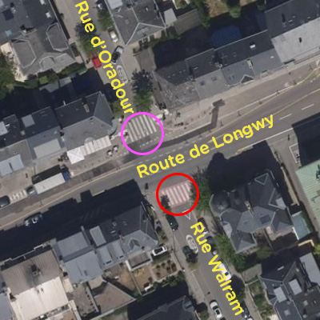

Uses aerial imagery from 2020.
This is the original "Safe Crossing" project, crowd-sourced and released in 2021.
The map shows dangerous pedestrian crossings in Luxembourg-City. They are dangerous because designated parking spots (including bus stops) are located less than 5 metres away from them. This reduces drivers' visibility of the crosswalk and the people using it, putting them in unnecessary danger. In fact, setting up parking spots so close to crosswalks is also in violation of the Highway Code ("Code de la route").
Red and orange dots mark the relevant crossings:
Red (475 crossings, 27%): Dangerous crosswalk due to illegal parking spots nearby
Yellow (162 crossings, 9%): Unable to determine whether the crosswalk is dangerous
Safe crosswalks which are not affected by dangerously close parking spots are not shown on the map (1150 crossings, 64%).
By hovering (or tapping) on a dot, you can check the street name and neighbourhood, and how many users cast votes during the crowd-sourcing. You can also check out the relevant OpenStreetMap node id.
The data for the project was gathered through a crowd-sourced effort with about 25 volunteers in 2021. You can find detailed information about the process at the link at the bottom of this text.
Raw location data for the pedestrian crossings comes from OpenStreetMap. Satellite imagery comes from Geoportail. Download the data as GeoJSON or as CSV.
Want to know more? Click here for all the nitty-gritty details of the project
The map shows pedestrian crossings in Luxembourg-City that are missing or incorrect. When drivers enter a "zone 30" from a major road (N or CR road), regulations and guidelines from 2013 require a pedestrian crossing with a red background. In Luxembourg-City, the red background is missing in at least 123 cases, or the pedestrian crossing is missing completely in at least 107 cases.
Without the red crossings, drivers might not realise they are entering a 30 zone, crossing the road is dangerous and uncomfortable for pedestrians, and walking gets discouraged.
In 2021, we had already alerted the city about unsafe crossings with parking spaces too close. This new project shows that the city keeps systematically failing to apply guidelines when it comes to pedestrian infrastructure.

The crossing on rue d'Oradour is missing a red background. (The crossing on rue Walram has a red background.)
Dots made of emojis mark the relevant crossings:
🚨: Crosswalk completely missing at entrance of 30km/h zone, and probably dangerous and uncomfortable for pedestrians. Walking is discouraged.
😑: Crosswalk is there but should have red background at entrance of 30km/h zone.
✅: Crosswalk has red background at entrance of 30km/h zone as required. All good.
Clicking on a dot shows the street name and neighbourhood.
Only the crossings at the entrance of a zone 30 are shown.
Always when coming from a major road (voirie étatique, i.e. N or CR roads). See E.2.8. and E.2.9. of the regulations and page 16 of the guidelines from 2013
The regulations are unclear. Crossings certainly make sense there, for example along boulevard Roosevelt.
On our contact page or on Twitter
The city sent us these guidelines in response to an information request under the Loi du 14 septembre 2018 relative à une administration transparente et ouverte. They did not mention any other rules or documents.
The city should fix all these pedestrian crossings.
Court cases take a long time. Our lawyers and the city's have submitted written arguments. We shook our heads a lot reading their arguments, and are confident that we will win when the case goes in front of a judge in a few months.
The location and paint data for the pedestrian crossings comes from OpenStreetMap, and the analysis was automated using the Overpass API. OpenStreetMap data is crowdsourced and may contain errors. ZUG can't guarantee that the presented data is without errors, and kindly asks you to please report any that you find. 2022 Aerial imagery from Geoportail. Download raw data as geojson.
2023-06-21: removed false positives in rue Irmine and parvis de la Gare. Updated figures.
2023-06-23: removed false positives in rue Chimay. Updated figures.